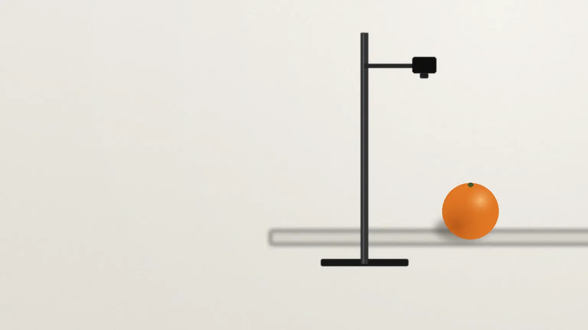
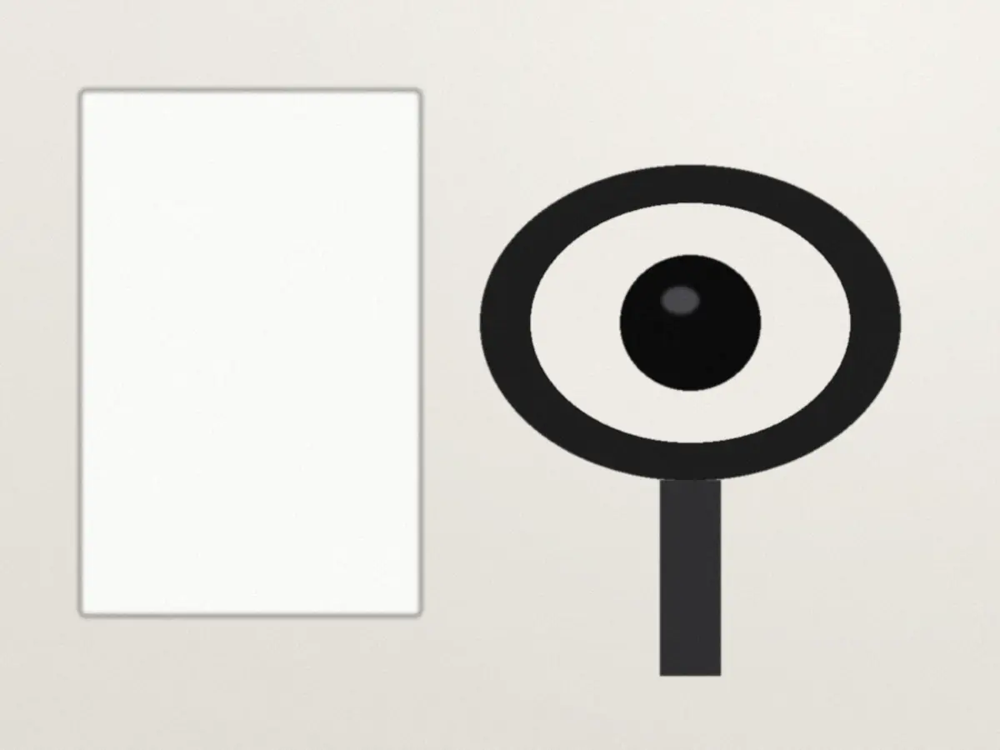
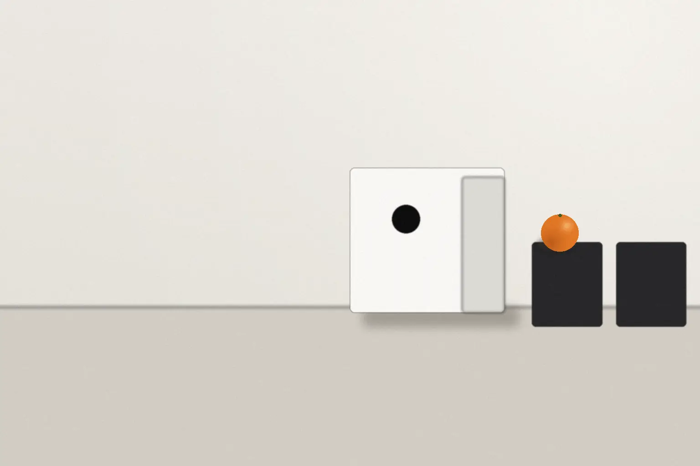

目で見る検品のための画像認識
見る仕事を、
もう一つの目と
分け合う。
撮影台とカメラで1つずつ撮り、形・色・傷の判定の候補を出します。最後に良し悪しを決めるのは、いつもの検品係です。
料金試験運用 1か月 55,000円から税込・見本用の架空価格
- 対象
- 手のひらに載る大きさの
農産物・食品・部品 - 判定
- 形・色・表面の傷
- 進め方
- 1か月の試験運用で、試してから決める
- 相談
- オンラインで30分見分けたいものが決まっていなくても相談できます
02何をする事業か
同じ光、同じ距離で、
1つずつ撮る。
カメラ・リング照明・白い拡散板の3つを、撮影台に組んで使います。
-
入力撮る

撮影台に1つ置くと、1秒で撮影します。
-
処理候補を出す
形・色・傷のどれが気になるかを、印で示します。
-
出力人が決める
検品係が見て、仕分けのかごへ。
03この事業の考え方
最後に決めるのは、人。
ミルメがすること
- 試験運用のあいだの、判定の記録を残す
- 形・色・傷の、判定の候補を出す
- 候補の横に、どこを見て、なぜ気になったかを、写真の上の枠と短い言葉で示す
人が決めること

- 判定の基準を、お店や工場の検品係と一緒に決める
- 候補の理由を見て、残すか外すかを決める
- 続けるかどうかを、試験運用の記録を見て決める
基準が合わない間は、試験運用を延ばして調整します。
04いまできること・これから取り組むこと
作業台の端に置ける、
小さな判定装置から。

- 形ゆがみ・大きさの外れ提供中
- 色色むら・熟し具合の差提供中
- 表面の傷すり傷・へこみ・しみ提供中
- 重さはかりとの連携構想中
- 中身光を通した検査構想中
構想中のものは、まだ提供していません。
05進め方と費用

費用は、試してから
決められます。
- 1サンプルを集める約2週間
- 2撮影半日〜1日
- 3試験運用1か月
- 4本番月ごと
- 試験運用1か月・1品目・装置の貸し出し込み
- 55,000円
- 本番の月額1品目・装置1台
- 22,000円〜
税込・見本用の架空価格です。試験運用のあとに、続けない選択もできます。
相談はオンラインで30分。2営業日以内に日時の候補を返信します。